Ejercicios de Orquestación de servicios BPEL
Vamos a crear desarrollar, desplegar y probar un sencillo servicio Bpel utilizando Netbeans. Para ello seguiremos los pasos que hemos indicado en esta sesión. En este caso, se trata de un proceso BPEL síncrono que simplemente recibe un mensaje de entrada y, en función de su contenido, devuelve una respuesta u otra al cliente. Concretamente, el mensaje de entrada consiste en una cadena de caracteres. Si dicha cadena tiene el valor
El cliente, después de invocar al proceso BPEL, permanece bloqueado hasta que el proceso termine y devuelva el resultado. (1,5p)
Pasos previos con Netbeans
En esta sesión y en la siguiente, vamos a utilizar una versión de Netbeans 7.1 que incluye los plugins necesarios para poder crear y editar proyectos BPEL, así como proyectos Composite Application, necesarios para poder desplegar nuestro proyecto BPEL como un componente JBI en el servidor de aplicaciones. El IDE con la que vamos a trabajar está disponible en la máquina virtual en:
/opt/SOA/bin/netbeans
Tendréis que instalar el plugin de JUnit para que puedan ejecutarse los tests de las Composite Applications. Para instalar dicho plugin, hay que hacerlo desde Desde Tools->Plugins-Available Plugins
En la pestaña "Servers" podéis ver que tenemos disponible un segundo servidor de glassfish (versión 2.x). Ésta es la versión que vamos a utilizar para trabajar con BPEL. El servidor de glassfish 2.x tiene instadado el runtime de JBI, necesario para poder desplegar nuestro proyecto BPEL. Lo primero que haremos será poner el marcha dicho servidor. Entonces podremos ver el componente JBI, que contiene las máquinas de servicios (service engines), componentes de enlazado (binding components) y los ensamblados de servicios (service assemblies)
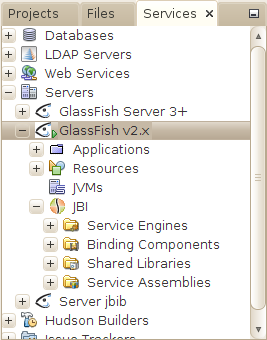
Podemos abrir la consola de administración del servidor de aplicaciones en la dirección:
http://localhost:4848
Por defecto, los datos para acceder a la consola son:
User Name: admin
Password: adminadmin
Creamos el proyecto BPEL
La mejor forma de familiarizarnos con la construcción de diagramas BPEL es crear un proyecto ejemplo (sample project). Netbeans permite generar dos tipos de proyectos ejemplo: síncrono y asíncrono. El IDE genera un proyecto esqueleto, con los ficheros wsdl y xsd que podremos modificar a nuestra conveniencia.
| 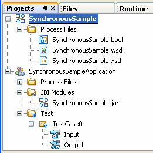 |
Para crear un nuevo proyecto ejemplo BPEL:
Cuando creamos un proyecto BPEL ejemplo, automáticamente se genera el proyecto de aplicaciones compuestas, y automáticamente se añade el proyecto del módulo BPEL como un módulo JBI en el proyecto Composite Application. |
El proyecto BPEL tiene una serie de propiedades, a las que podemos acceder pulsando con el botón derecho sobre el nodo del proyecto (en la ventana Projects), y seleccionando Properties del menú emergente. En este caso, nos aparecerá un cuadro en el que podemos acceder a varias páginas:
- General: muestra la ruta de directorios de los ficheros del proyecto, entre otros elementos
- Referencias del proyecto: muestra otros proyectos BPEL referenciados por nuestro proyecto BPEL
- Catálogo XML: muestra las entradas del catálogo XML usado en el proyecto BPEL. Los catálogos XML proporcionan información de mapeo entre una entidad externa en un documento XML y la localización real del documento que está siendo referenciado.
WSDL y esquema de nombres del proyecto BPEL
En este caso, al utilizar una plantilla para el proceso BPEL síncrono, Netbeans ha creado por nostros el fichero WSDL y el esquema de nombres.
Los ficheros WSDL pueden visualizarse de tres formas: podemos ver el código fuente (Source view), podemos verlo en forma de árbol de componentes(WSDL view), o de forma gráfica (Partner view).
La siguiente figura muestra la vista gráfica del fichero WSDL creado:
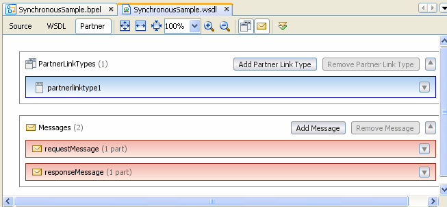
Podemos ver que el fichero WSDL contiene una definición de partnerLinkType, que define el rol partnerlinktyperole1, asociado al portType portType1. También hay definidos dos mensajes: uno de entrada (requestMessage), y otro de salida (responseMessage), que contienen una cadena de caracteres.
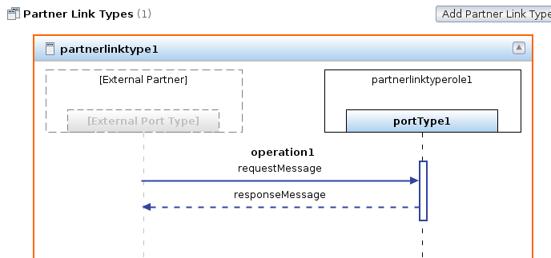
El fichero de definición de esquema es opcional en un proyecto BPEL. En este caso Netbeans también lo ha generado por nostros. Al igual que ocurre con los ficheros WSDL, los ficheros de esquema tienen tres vistas diferentes: código fuente (Source view), árbol de componentes(Schema view), y vista gráfica (Design view). En la siguiene figura se muestra la vista gráfica del fichero xsd creado:
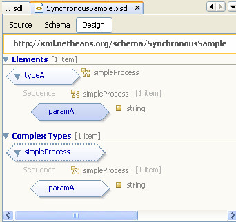
Podemos ver que se ha definido el tipo typeA, que es un elemento del tipo complejo simpleProcess, que a su vez es una cadena de caracteres
En caso de que tuviésemos que crear nosotros los ficheros WSDL y de esquema, el proceso que se sigue es similar en ambos casos, tal y como ya hemos visto en sesiones anteriores:
- Crear un nuevo documento: pinchamos con el botón derecho del ratón sobre el nodo Process Files y elegimos New->WSDL Document, o New->Other/XML/XML Schema.
- Desde la vista gráfica, añadimos componentes arrastrándolos desde la ventana Palette a la vista grafica.
- Desde la vista de árbol, añadimos componentes y pinchamos con el botón derecho sobre nodo del tipo de componente que queremos añadir, y elegimos el opción Add ... correspondiente del menú emergente
- Desde la vista de fuente, escribimos el código en el editor de texto
Lógica del proceso BPEL
Netbeans ha creado un proceso BPEL síncrono muy sencillo, que podremos modificar según nos interese. En el caso de que tuviésemos que crearlo nosotros, tendríamos que hacerlo pinchando con el botón derecho del ratón sobre el nodo Process Files y después elegir New->BPEL Process en el menú emergente.
El proceso BPEL presenta tres vistas: código fuente (Source), vista gráfica (Design), y vista de mapeado (Mapper). Utilizaremos esta última vista más adelante. La vista de diseño (o vista gráfica) que se ha generado de forma automática es la siguiente:
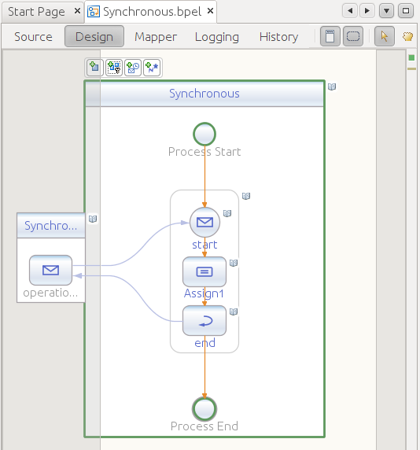
En el caso de que tuviésemos que crear nosotros el proceso BPEL desde cero, tendríamos que ir añadiendo elementos arrastrándolos desde la ventana Palette hasta la vista de diseño del proceso BPEL.
| 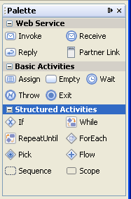 |
La paleta de componentes nos muestra los elementos que podemos insertar en el proceso BPEL, clasificados en tres categorías:
|
A continuación mostramos el código fuente generado por Netbeans:
<?xml version="1.0" encoding="UTF-8"?>
<process
name="SynchronousSample"
targetNamespace="http://enterprise.netbeans.org/bpel/
SynchronousSample/SynchronousSample_1"
xmlns="http://docs.oasis-open.org/wsbpel/2.0/process/executable"
xmlns:xsd="http://www.w3.org/2001/XMLSchema"
xmlns:bpws="http://docs.oasis-open.org/wsbpel/2.0/process/executable"
xmlns:wsdlNS="http://enterprise.netbeans.org/bpel/
SynchronousSample/SynchronousSample_1"
xmlns:ns1="http://localhost/SynchronousSample/SynchronousSample"
<import location="SynchronousSample.xsd"
importType="http://www.w3.org/2001/XMLSchema"
namespace="http://xml.netbeans.org/schema/SynchronousSample"/>
<import namespace=
"http://localhost/SynchronousSample/SynchronousSample"
location="SynchronousSample.wsdl"
importType="http://schemas.xmlsoap.org/wsdl/"/>
<partnerLinks>
<partnerLink name="SynchronousSample"
partnerLinkType="ns1:partnerlinktype1"
myRole="partnerlinktyperole1"/>
</partnerLinks>
<variables>
<variable name="outputVar" messageType="ns1:responseMessage"/>
<variable name="inputVar" messageType="ns1:requestMessage"/>
</variables>
<sequence>
<receive name="start"
partnerLink="SynchronousSample"
operation="operation1"
portType="ns1:portType1"
variable="inputVar" createInstance="yes"/>
<assign name="Assign1">
<copy>
<from>$inputVar.inputType/paramA</from>
<to>$outputVar.resultType/paramA</to>
</copy>
</assign>
<reply name="end"
partnerLink="SynchronousSample"
operation="operation1"
portType="ns1:portType1"
variable="outputVar"/>
</sequence>
</process>
Según el código fuente anterior, podemos ver que la lógica del proceso de negocio consiste en esperar a recibir una llamada del partner link cliente sobre la operación operation1, con el mensaje de entrada inputVar. Una vez que el proceso BPEL ha sido invocado por un cliente, asignamos el valor del mensaje de entrada en el mensaje de salida, denominado outputVar y se lo enviamos al cliente utilizando la actividad reply
Añadimos una actividad if
Vamos a modificar este proceso inicial añadiendo una actividad if en la vista de diseño. Para ello:
- Elegimos la actividad estructurada if de la paleta de componentes y la arrastramos a la vista de diseño del proceso BPEL, situándolo entre las actividades Start y Assign. Esto nos creará una actividad if denominada if1 en la vista de diseño. (El IDE nos indica dónde podemos situar los elementos que arrastramos mediante dos círculos concéntricos, coloreando el más pequeño).
- Pinchamos dos veces sobre la actividad if1 y aparecerá la ventana de mapeado (BPEL Mapper). Otra forma de acceder a la ventana de mapeado es, teniendo el componente if1 seleccionado (podemos ver que un componente está seleccionado proque aparece enmarcado en un rectángulo verde con bordes redondeados), simplemente cambiamos a la vista Mapper. Usaremos la ventana de mapeado para definir una condición booleana.
- En el panel de la izquierda vemos las variables de nuestro proceso BPEL. En el panel de la derecha
nos aparece una condición booleana asociada a la actividad if. Seleccionamos la condición booleana con el
botón izquierdo del ratón, así como el elemento paramA de la variable inputVar
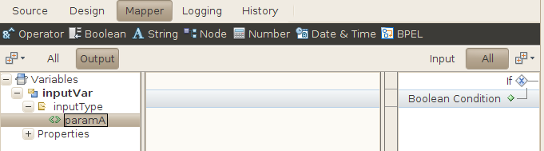
- En la barra de menús, pinchamos en Operator y seleccionamos la función EQUAL en el menú emergente. La función equal aparecerá en la parte central de la ventana de mapeado. Dicha función tiene asociados dos conectores de entrada y uno de salida (representados con forma de puntas de flecha).
- En la barra de menús, pinchamos sobre la función String y seleccionamos String Literal en la lista desplegable. Aparecerá una caja con la etiqueta String literal en el panel central.
- Tecleamos 'Hola mundo' en la función string literal y pulsamos retorno de carro.
- Pinchamos con el ratón sobre paramA y lo arrastramos hasta el segundo conector de entrada de la función equal.
- Pinchamos sobre el conector de salida de String Literal y lo arrastramos hasta el otro conector de entrada de Equal.
- Desde la función equal, arrastramos el conector de salida hasta Boolean Condition en el panel de la derecha. Si no se muestra el nodo Boolean Condition, simplemente haremos doble click sobre la condición if1.
La siguiente figura muestra el resultado de realizar las acciones anteriores:
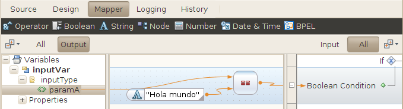
Añadimos una actividad Assign
En la vista de diseño, arrastramos la actividad Assign1 existente hasta la actividad if. Colocamos esta actividad entre rombos con el icono X en el área de la actividad if1
A continuación, elegimos la actividad Assign de la sección de actividades básicas de la paleta, y la arrastramos a la derecha de la actividad Assign1 existente.
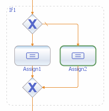
Seleccionamos la nueva actividad Assign2 y volvemos a utilizar la ventana de mapeado de la siguiente forma:
- Expandimos los nodos Variables - inputVar - inputType y Variables - outputVar - resultType (en el panel de la izquierda). Veremos que en el panel de la derecha el nodo Variables no se puede expandir (está vacío). Para poder ver los sub-nodos hacemos doble click sobre el nodo variables, y nos aparecerá el sub-nodo outputVar, si de nuevo hacemos doble click sobre outputVar, nos aparecerá el sub-nodo resultType, y así sucesivamente hasta que aparezca el nodo paramA
- Seleccionamos las variables paramA tanto del panel de la derecha como el de la izquierda. Seguidamente seleccionamos el grupo de funciones de String y elegimos (pinchamos) sobre la función concat. Aparecerá la función Concat en el panel central
- Hacemos doble click sobre el primer campo de la función Concat, tecleamos 'Hola ' y pulsamos el retorno de carro
- Con el botón izquierdo, arrastramos paramA del panel de la izquierda hasta el segundo campo de la función concat
- Arrastramos el ratón desde el conector de salida de la función concat hasta paramA (en el panel de la derecha). Esto concatena la cadena 'Hola ' con la entrada y copia el resultado en la salida
Después de realizar los pasos anteriores, la ventana de mapeado debe presentar el siguiente aspecto:
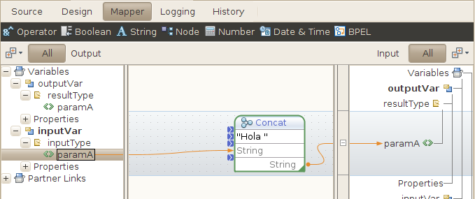
Desplegamos el proyecto en el servidor de aplicaciones
Nuestro proyecto Bpel no es directamente desplegable en el servidor de aplicaciones. Para poder hacer el despliegue tenemos que incluir el "jar" de nuestro proyecto como un módulo JBI en una Composite Application (en nuestro caso será el proyecto SynchronousSampleApplication) la composite application contendrá un ensamblado de servicios que sí podremos desplegar en el servidor de aplicaciones.
Para desplegar el proyecto realizaremos los siguientes pasos:
- Compilamos nuestro proyecto Bpel (SynchronousSample) pinchando con botón derecho y seleccionando Build
- Pinchamos con el botón derecho sobre el proyecto SynchronousSampleApplication y seleccionamos
Add JBI module.... Elegimos el proyecto SynchronousSample y pinchamos sobre "Add Project JAR files"
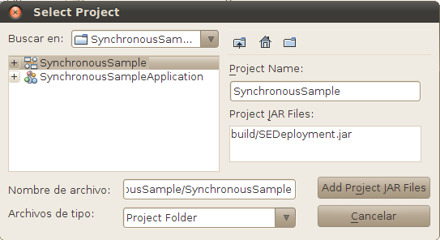
- Pinchamos con el botón derecho sobre el proyecto SynchronousSampleApplication y elegimos Deploy Project, seleccionando Glassfish v2.x. Aparecerá el mensaje BUILD SUCCESSFUL en la ventana Output
Podemos ver el resultado del despliegue en la pestaña Services, en el servidor de aplicaciones Glassfish v2.x. El componente SynchronousSampleApplication se ha desplegado como un ensamblado de servicios dentro del meta-contenedor JBI.
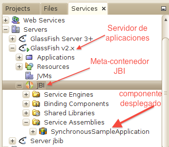
Creamos un conductor de pruebas
Vamos a añadir casos de prueba para comprobar el funcionamiento del proceso BPEL que hemos creado. Para ello seguiremos los siguientes pasos:
- En la ventana Projects, expandimos el nodo del proyecto SynchronousSampleApplication, pinchamos con el botón derecho sobre el nodo Test, y elegimos New Test Case del menú emergente.
- Vamos a darle el nombre CasoPrueba1 y pinchamos en Next.
- Expandimos SynchronousSample - Source Packages y seleccionamos SynchronousSample.wsdl. Pinchamos en Next
- Seleccionamos operation1 y pinchamos en Finish. Ahora, en en árbol del proyecto, bajo el nodo Test se ha creado la carpeta CasoPrueba1, que contiene dos ficheros: Input y Output
- Pinchamos dos veces sobre Input y modificamos su contenido de la siguiente forma:
- Localiza la siguiente línea en los contenidos del cuerpo: <syn:paramA>?string?<syn:paramA>
- Reemplaza ?string? con Colega
- Grabamos los cambios desde File->Save
- Pinchamos dos veces sobre Output.xml para examinar los contenidos. Antes de ejecutar las pruebas, este fichero está vacío. Cada vez que ejecutemos las pruebas, la salida actual se compara con los contenidos de Output. La entrada (input) se copia sobre Output cuando Output está vacío.
Ejecutamos las pruebas sobre SynchronousSampleApplication
En la ventana Projects, expandimos SynchronousSampleApplication - Test - CasoPrueba1. El nodo CasoPrueba1 contiene dos ficheros XML: Input para la entrada, y Output para la salida esperada. Como ya hemos indicado, cada vez que se ejecuta el caso de prueba, la salida actual se compara con el contenido de Output. Si coinciden, entonces superamos la prueba y veremos en la ventana Output el mensaje: Nombre_Caso_Prueba passed. Si no coinciden, aparecerá el mensaje Nombre_Caso_Prueba FAILED.
Pinchamos con el botón derecho sobre el nodo CasoPrueba1, y elegimos Run en el menú emergente. Nos fijamos en la ventana Output y veremos que el test se ha completado y que no pasamos el test, ya que aparece el mensaje CasoPrueba1 FAILED. En este caso, como el fichero Output está vacío, se nos pregunta si queremos sobreescribirlo. Contestamos que sí. Después de la primera ejecución, el fichero Output.xml ya no está vacío, por lo que su contenido será preservado y no será sobreescrito por el nuevo resultado. Si ejecutamos de nuevo el test, podremos ver el mensaje: CasoPrueba1 passed.

Cambios en la lógica de negocio
Modifica la lógia del proceso bpel de forma que: si la cadena de entrada es null, devuelva el mensaje de error "ERROR: Valor null". Si la cadena de entrada no es null y es "Hola mundo", entonces debe devolver la misma cadena como salida, y si no es igual a "Hola Mundo" debe devolver "Hola cadena", siendo "cadena" el valor de la cadena de entrada. (0,75p)
Añade dos casos de prueba nuevos, con nombres TestHolaMundo y TestNull. Para el primer test, el valor de la cadena de entrada debe ser "Hola mundo", para el segundo test, el valor de entrada debe ser "null". (0,75p)
Notas de ayuda:
- Cuando añadamos el nuevo "if" en la vista de diseño, y pasemos a la vista de mapeado, en el panel de la derecha vemos que únicamente nos aparece el nodo "if". Si hacemos doble click sobre él, nos generará el nuevo sub-elemento "boolean condition"
- Una forma de comprobar si un elemento es "null" es comprobando si el número de elementos del nodo correspondiente es
cero (menú "Node", función "Count"). La siguiente figura ilustra la comprobación de que la cadena de caracteres de
entrada no sea "null".
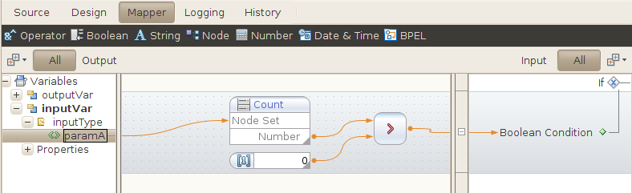
- Después de hacer las modificaciones en la lógica del proceso bpel, hay que compilar de nuevo el proyecto Bpel, borrar el componente JBI de la Composite Application (SynchronousSample.jar) con botón derecho seleccionando "Delete", a continuación añadimos de nuevo el componente JBI, y volvemos a desplegar SynchronousSampleApplication
- En el mensaje soap de entrada para el caso de prueba TestNull, simplemente "borra" la línea <syn:paramA>?string?</syn:paramA> del fichero input.xml